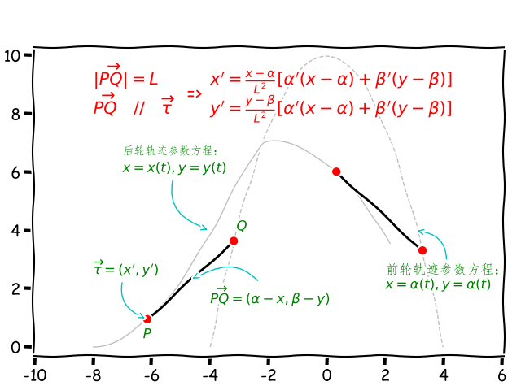
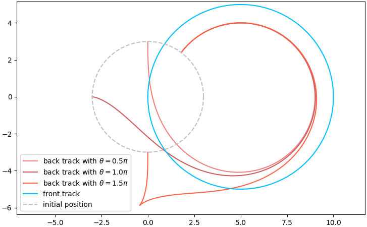

Python求解自行车前后轮轨迹问题¶
数月前偶遇一道自行车相关的趣味数学题：根据下图 1 所示自行车前、后轮轨迹，判断自行车的前进方向，是从左往右还是从右往左？

不曾想过，平常无奇的自行车的两轮之间还蕴藏着恒定的规律。 在赞叹答案思路清奇之余，也萌生了基于前轮轨迹求解后轮轨迹的想法。本文首先建立自行车轨迹问题的数学模型（常微分方程），然后利用Python的scipy.odeint进行求解，最后对问题的解进行可视化。
数学模型¶
文章开头的问题最早出自《Which Way did the Bicycle Go? … and Other Intriguing Mathematical Mysteries》一书，封面用的即是这道看似无法求解的问题。福尔摩斯探案集系列中也设计了类似的案件，可惜给出的却不是正确的解释。

这其实是一道精彩的几何问题。考虑一下自行车的结构和运动特点：前轮可以自由控制行进方向，而后轮因为焊死在车架上而只能沿着车身方向行进。因此，后轮轨迹曲线上任一点的切线方向即为车身方向，并且该方向与前轮轨迹曲线的交点即为自行车前后轮轮毂中心的距离，而这保持一个定长（车身长度）。用数学语言描述为：
作后轮曲线上任一点P的切线，得到与前轮轨迹曲线的交点Q，则线段PQ保持定长。
所以解题方法为，分别假设前后轮轨迹，然后按照上述结论进行验证。本题答案为自行车从左向右行驶，具体参考下图：


开篇的问题解决了，接下来进入正题：已知任意给定的前轮轨迹，如何求解相应的后轮轨迹？为方便起见，我们用参数方程来描述曲线上任一点的坐标(x,y)，例如已知前轮轨迹x=\alpha(t), y=\beta(t)，求解后轮轨迹x=x(t), y=y(t)。
由定长条件\|\overrightarrow{PQ}\|=L得到：
\begin{equation*} (x-\alpha)^2 + (y-\beta)^2 = L^2 \end{equation*}
上式对参数t求导：
\begin{equation*} (x-\alpha)*(x'-\alpha')+(y-\beta)(y'-\beta')=0 \end{equation*}
另一方面，由\overrightarrow{PQ}//\overrightarrow{\tau}得到：
\begin{equation*} \frac{y'}{x'}=\frac{y-\beta}{x-\alpha} \end{equation*}
联立以上两个式子即可得到：
\begin{align*} x' &= \frac{x-\alpha}{L^2} \left[\alpha'(x-\alpha)+\beta'(y-\beta)\right] \\ y' &= \frac{y-\beta}{L^2} \left[\alpha'(x-\alpha)+\beta'(y-\beta)\right] \\ \end{align*}

常微分方程数值解¶
上式表明这是一个常微分方程组求解问题。只有当前轮轨迹是某些非常简单的曲线时，后轮轨迹才有可能被解析求解，所以本文采用的是数值求解的方法。
欧拉在求解形如y'(x)=f(x, y)的微分方程的数值解问题上给出了一些标准解法。本文待求解的方程组中\alpha, \beta都是参数t的函数，因此可以归结为：
\begin{align*} x'(t) &= f(t, x, y) \\ y'(t) &= g(t, x, y) \\ \end{align*}
为了套用y'(x)=f(x, y)的标准形式，我们将上述方程组改写为向量形式Y'=F(t, Y)。其中，
- Y=(x,y)表示待求解微分方程组的各个分量组成的向量，也就是后轮曲线上的x和y坐标；
- F=(f,g)表示待求解微分方程组的各个控制方程。
作为练习，我们当然可以自己实现欧拉方法及其改进算法（例如Runge-Kutta方法）来求解上述问题，但这不是本文的重点。所以我们直接采用Python科学计算库scipy中的odeint()方法来求解常微分方程。
odeint()函数声明如下（除了最基本的前三个参数外，这里将其余参数统一用**kw表示），具体参考官方文档 2。
scipy.integrate.odeint(func, y0, t, **kw)func表示待求解的函数对象，默认参数列表callable(Y, t, …)，即待求解变量Y出现在自变量t之前。- 如果设置
tfirst=True，则改变为callable(t, Y, …)的形式。 - 如果求解微分方程组，则函数返回值为各个微分方程返回值组成的向量。
- 如果设置
y0表示给定的初始条件，显然求解微分方程组时y0是一个向量。t表示自变量的求解区间或者给定序列，并且t[0]必须正好对应初始条件y0。
函数返回值为二维numpy数组，每一行对应给定的自变量序列t的一个值，每一列对应待求解变量y的一个分量。
Python求解方案¶
前两节分别建立了数学模型和给出了求解方法，接下来借助Python实现即可解决自行车轨迹问题了。考虑到微分方程的解依赖于初始条件，也就是说即便前轮走同样的轨迹，后轮轨迹也会因为刚启动自行车时车身姿态（后轮位置）的不同而不同。当初想到这个问题，也正是想探究以不同姿态启动自行车时，后轮是如何追随前轮轨迹的。所以，下面以前轮轨迹参数方程为构造函数参数开始自行车轨迹问题的面向对象求解。
import autograd.numpy as np
from autograd import grad
from scipy.integrate import odeint
class BicycleTrack:
'''
Solving and plot back wheel track according to front wheel track and
initial position of the bicycle.
The track of front wheel is given by:
x = fx(t)
y = fy(t)
Arguments:
fx : function object of front wheel track x component
fy : function object of front wheel track y component
'''
def __init__(self, fx, fy):
# front wheel track
self.front_track_x = fx
self.front_track_y = fy
# first derivative of front wheel track on parameter t
self.dfx = grad(fx)
self.dfy = grad(fy)
# solved back track represented with t, x, y
self.t, self.X, self.Y = None, None, None # back track
self.FX, self.FY = None, None # front track从这个问题的控制方程可知，我们需要求解前轮轨迹的一阶导数，这里借助第三方库autograd来实现[3]。例如上述代码中self.dfx = grad(fx)即得到前轮横坐标参数方程fx的一阶导函数dfx。此外，为了避免使用该库过程中出现未知的问题，平时导入numpy库的代码应改为import autograd.numpy as np。
接下来定义待求解的微分方程组：
def governing_equation(self, t, Y):
''' ODEs of Bicycle Track Problem '''
x, y = Y
k1 = np.array([self.dfx(t), self.dfy(t)])
k2 = np.array([x-self.front_track_x(t), y-self.front_track_y(t)])
return np.sum(k1*k2) * k2 / self.L**2-
本文采用了
callable(t, Y, …)形式的参数列表（仅仅因为个人习惯），因此后面被odeint调用时需要指明tfirst=True； -
self.L为自行车车身长度（前后轮毂中心距离），它在给定求解区间和初始条件时被确定。
最后，调用odeint求解数值解：
def solve(self, span, P0, num=100):
'''
span: solving range of parameter t
P0 : initial position of back wheel (x, y)
'''
# initial point of back wheel
P0 = np.array(P0)
# initial point of front wheel is defined by parametric equations
t0, t1 = span
Q0 = np.array([self.front_track_x(t0), self.front_track_y(t0)])
# frame length is defined by P0 and Q0
self.L = np.sum((P0-Q0)**2)**0.5
# solving
self.t = np.linspace(t0, t1, num)
res = odeint(self.governing_equation, P0, self.t, tfirst=True)
# solved back track
self.X, self.Y = res[:, 0], res[:, 1]
# front wheel track
self.FX, self.FY = self.front_track_x(self.t), self.front_track_y(self.t)self.FX、self.FY、self.X和self.Y分别保存求解后的前后轮横纵坐标值，可以直接用于后续的可视化。
验证¶
上文提到仅有少数简单的情形才能得到后轮轨迹的解析表达式，我们以特殊情形之一——曳物线 4 5为例进行验证。曳物线可以理解为：自行车初始沿着y轴停放且保持前轮正好在原点，然后前轮沿着x轴正方向行进，此时后轮的轨迹即为曳物线。
- 前轮轨迹非常简单：x=t, y=0
- 根据曳物线的解析表达式得到后轮轨迹的解析解：x=L*(t-tanht), y=L*secht（
L为车身长度）。
import numpy as np
import matplotlib.pyplot as plt
from bicycle_track import BicycleTrack
L = 1 # length
# numeric solution
BT = BicycleTrack(lambda t: t, lambda t: 0*t)
BT.solve([0, 5], np.array([0, L]), 50)
# analytical solution
t = BT.t
x = L*(t-np.sinh(t)/np.cosh(t))
y = L/np.cosh(t)
# plot
plt.plot(BT.X, BT.Y, 'ro', label='numeric solution')
plt.plot(x, y, 'deepskyblue', label='analytical solution')
plt.legend()
plt.show()
结果展示¶
下面代码画出同一自行车从不同初始状态沿着相同前轮轨迹行进时后轮的轨迹曲线。
- 前轮从原点出发沿着曲线(x-5)^2+y^2=25逆时针运动
- 车身长度L=3，后轮的初始位置必定在圆x^2+y^2=9上。这里选取与x轴正向夹角\theta分别为\pi/2, \pi, 3\pi/2的三个初始位置。
import autograd.numpy as np
from bicycle_track import BicycleTrack
import matplotlib.pyplot as plt
def fx(t):
return 5+5*np.cos(t)
def fy(t):
return 5*np.sin(t)
L = 3
span = [-np.pi, np.pi]
fig = plt.figure(tight_layout=True)
colors = ['lightcoral', 'indianred', 'tomato']
BT = BicycleTrack(fx, fy)
for i,c in enumerate(colors):
theta = (i+1)*np.pi/2.0
P0 = L*np.array([np.cos(theta), np.sin(theta)])
BT.solve(span, P0)
plt.plot(BT.X, BT.Y, color=c, label=r'back track with $\theta={0}\pi$'.format(theta/np.pi))
# front track
plt.plot(BT.FX, BT.FY, color='deepskyblue', label='front track')
# initial position
u = np.linspace(0, 2*np.pi, 50)
plt.plot(L*np.cos(u), L*np.sin(u), '--', color='silver', label='initial position')
plt.legend()
plt.axis('equal')
plt.show()
图中三条后轮轨迹曲线验证了我最初的一个想法：无论初始位置如何，最终后轮的轨迹将趋于一致。这也是一个很直观的认识，虽然启动自行车时车身姿态（车身方向与目标方向的夹角）略有不同，后轮轨迹在行进一段距离后将稳定地跟随前轮轨迹。
此外，图中还反映了一个有意思的现象：\theta=3\pi/2时的后轮轨迹并不“光滑”——初始阶段出现了倒车，而后正常前进。但实际上，普通自行车并不能主动倒车！这表明，虽然数学上这是一组解，但实际上并不真实；也就是说，相对真实的物理模型，我们还漏掉了某些条件。
将自行车瞬时速度分别沿着车身和垂直的车身方向进行分解，普通自行车的结构决定了不能主动倒车，表明沿着车身方向的速度分量必须由后轮指向前轮。这样就决定了车身方向（后轮指向前轮）与行进方向夹角的绝对值\|\delta\|\le\pi/2。
上图中，自行车启动瞬时前轮沿着y轴负方向，\theta=3\pi/2的曲线初始位置时车身沿着y轴正方向，即车身与行进方向夹角\delta=\pi违反了上述限定条件，因此这是一组实际骑行中并不可能的解。
最后，以matplotlib动画形式（动画过程具体参考文末汇总代码）直观感受一下上述运动过程：

BicycleTrack类及主要测试代码汇总如下：
https://github.com/dothinking/blog/blob/master/samples/bicycle_track/bicycle_track.py